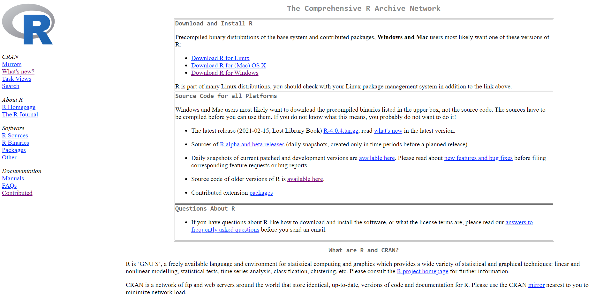

How to Install R ?
One basically needs to download two things to get started with R coding i.e. R & R Studio. Think R as a engine whereas R studio as the whole car which supports the engines execution.
- Download R from CRAN (Comprehensive R Archive Network)
First of all go to this website and download the needed file depending upon your operating system. After you downloaded, install the file and you are all set for first part.

CRAN R
- Download R Studio
Now after downloading the R, you are all set to download the R Studio from this. Install the R Studio by opening up the downloaded file. There is nothing wierd setting to be set while installing, go with the flow.
If everything goes alright you should be able to set the R environment for you analytical journey.

R studio